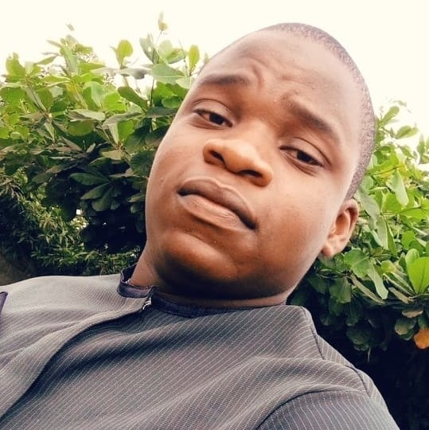

John Martins Ononivami

Education:
- Primary Education at Omolade International School
- Secondary Education at Omolade Comprehensive College
- Tietiary Education at The University of Ibadan, B.sc in Computer Science. From 2024 to 2029
Skills:
- Public speaking
- flexibility and adaptation to any environment
- innovative thinking
Awards:
- Most loved Science teacher of the year.
- Best graduating student of my set
Summary:
I have alaways given my best to any task or group I find myself.
I relate well with other people in order to get the job done.
Others:
Hobbies
contacts